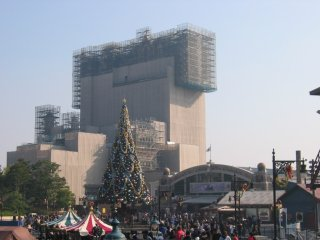

お嫁さんは最近音楽を聴くのに、iPod photoを使用している模様。iPod photoを使うこと自体は大変よいのだが、うちには、その昔に購入したSONYのネットワークウォークマンNW-E5がある。96MB版の限定版なのだが、CODECもATRAC3限定。しおしお～。いまとなっては、全然使わない。つ～か、(お嫁さんは)存在自体おぼえていないのでは? さて、一体どうしたものか。オークションで売るか!? でも、買ってくれる人いるのかなぁ。あと、ATRAC3でencodeしたデータをどうしてくれようか。MP3形式で持っている曲と重複しているものは問答無用で消せばいいんだけど、ATRAC3でしかないものが若干ある……。
今年は7月9日にハイキングに行った以降、仕事がドトーのようにいそがしくなってしまい、その後どこにも行けていない。ちと体力的にはつらかったのだが、紅葉のシーズンを逃すわけにも行かずにGO! とゆーわけで、体力的に比較的楽な高尾山へ向かう。とにかくずっと寝不足なので、7:00に起きて9:00に出発するというスロースタート。9:50新宿発の京王線準特急に乗って、10:40すぎに高尾山口に到着。高尾山口駅は、スゴイ人人人! トイレは大行列なので、少し離れた駐車場のトイレに行く。11:00すぎ、ケーブルカー清滝駅の左側から稲荷山に向かって登りはじめる。
あんまり紅葉していない……というか針葉樹が多いぞ。もしかして、このコースは選択ミス? 稲荷山の頂上もガスっていて展望がよろしくなかったため、そのまま高尾山に向かう(11:40)。12:30、高尾山の頂上に到着。あいかわらず、ものスゴイ人人人! とにかく人だらけなので、奥高尾のもみじ台まで移動。さて、昼メシを……というところで、なんとケトル(やかん)を忘れたことに気づく。たまに行くから、こーゆーことになるんだよ。着替えたはずなのに汗が冷えて、心も身体も寒いぜ。おにぎり食って、焼き鳥缶を温める。お嫁さんがコーヒーを飲みたいというので、小仏城山へ移動。
13:25、もみじ台を出発。もみじ台付近も、それほど紅葉していない。とゆーわけで、まき道メインで進む。2週間後ぐらいに、また来るか。14:15、小仏城山に到着。小仏城山の売店では、200円でコーヒーが飲める。14:35に出発して、小仏峠に向かう。ここからは、どんどん降りて行くだけ。15:25には小仏のバス停に着いてしまう……が、ハイカーが多くて40分のバスには座れなかった。座れなかったのは仕方ないにしても、混雑しているのだから荷物は床に降ろすとか少しは考えようぜ。横入りしたりとか、中高年ハイカーのマナーは悪すぎ。京王線は大混雑が予想されたので、高尾からはJRで新宿へ移動した。
3年ぶりに、東京ディズニーシーへ行く。今回はゆっくり回るつもりだったのだが、まぁ～そんなもんは無理だった。平日のおかげで、モノレールはガラガラ……と思ったら、ホテルの駅で家族連れがドバッと乗って来る。とりあへず新しくできたアトラクション「レイジングスピリッツ」へ行く。360度まわるジェットコースターは、フロリダのディズニーワールドで「ロックンロールコースター」に乗って以来……だと思う。「タワーオブテラー」が建設中だったが、意外とできていたように感じられた。オープン予定は、2006年秋だと。夜は、マゼランで飯を食う。ディズニーシーは、酒が飲めるからいいやね。
 建設中のタワーオブテラー。